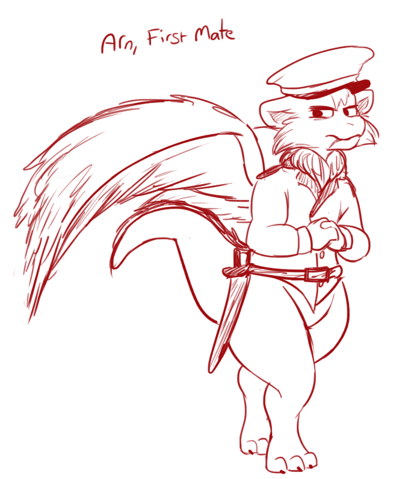

An elevator ride later down to the docks at sea-level my new ship stood before me. The "Attentive"!
A Galley-Frigate hybrid, it was larger then any ship we had in the east, yet the Admiral had stated it was merely an escort. I had seen some of the hulls under construction, the progress of the future was moving steadily on. It seemed that every time I returned to shore from a mission there was some new innovation and marvel to admire.
The ship had a sleek and slightly long look to it. Its forecastle was larger then the aft one. The forward bow overall was sturdy and the hull around it impressively reinforced. If I had rammed Nipfangs ship with this in full-speed I got the impression I would have cleaved right through them and kept going. But although this ship had an armored ramming bow its purpose was probably to protect it in approach or pursuit, no deep-sea ship is surely ever fully built for ramming.
The ship also had protected ports in the side for deploying oars for extra acceleration and maneuvering. It was unlikely we would get a chance to use them for a while, from what I understood the space used for the rowers were going to be occupied by cargo. I was pretty certain the ship could handle itself well without them, they seemed almost superfluous.
I'll have to study how the ship handles more closely later. The crew was lining up into rows in anticipation for my arrival, it looked like they had been ready to depart.
My new First-Officer, Arn, came to meet me. He was a gruff looking fellow with large brows that gave him a perpetual frown and a more salt-frayed mane then most Awes I've seen.
His demeanour was just as rough and he clasped paws only briefly before turning toward the arrayed sailors in the distance
"Im Arn, your new First. Lets not keep em waiting, shall we Captain?"

Crew
This is a larger crew then I ever commanded, its one thing to read the numbers and another to have everyone lined up before you standing at attention.
We would be quite over-capacity infact as I was expected to part with some of them when we reached the main-fleet as reinforcements. So despite the size of the ship, with the extra crew and supplies the ship was taking on for this journey, the holds below were going to be cramped. Crew would be sleeping in shifts and even officers were going to have to share quarters. I had to make sure the crew stayed happy and united in purpose.
But as I stood before them and introduced myself, I was struck on fast things had gone. Barely a few week earlier I had set port in the east with hopes of promotion. And here I was, the newcomer who was supposed to lead this large group of unknowns into foreign seas.
The diversity of the crew surprised me too. There were Awes of all tones, taken from all over the lands. Even the Raptorians didnt appear to be all from the
same Clan. These were no laborer Raptorians either, they were clearly warriors and stood with a disciplined stillness under the watchful gaze of their Packmaster and Alpha.
Besides them stood a contingent of squires, dedicated Raptorian caretakers and armorers.
They had even assigned me 3 valuable Scouts. Awes with high flight-aptitude and rigorous training to make the best use of it. The three of them stood by themselves off to the side, heavy cloaks covering and protecting their large wings. The leader was a black-furred Ravenseye, with eerie yellow eyes that
seemed to pierce straight through you when he looked your way.
At the front, with her two assistant nurses stood the Pouch-Matron. The medic and health caretaker of the crew. Her eyes were softer and she smiled with a
peaceful soothing softness that spoke well of ability already.
The bulk majority of the rest of the crew, the able sailors, fighters and workers all in one. They looked experienced all, fray-furred wings and manes from
long times at sea. Though three younger bright-eyed polished and groomed figures stood out from the rest. Officer Cadets, I had to sigh inwardly.
They had spared no expense for this crew. I was starting to realize more and more how the East-Sea was little but a training-ground for the inexperienced. This is where the true effort and resources of the Admiralty went.
One mysterious cowled figure stood by herself to the side of them all. My manifest said nothing about this individual and the crew appeared to give her
wide berth.
After dismissing the crew, keeping the ceremony short, I pointed her out to Arn and he grunted, managing to somehow deepen his scowl even further.
“Priestess that one.” He explained and would have left it at that if I hadent kept staring at him.
“Politics or some other have decreed that each crew over a hundred souls must have a spiritual representative. They are civilians and we're stuck with em. At least its just one.”
“I wasent told about this.” I muttered annoyed, to which Arn shrugged.
“Such is them politics 'cap, rumour has it this one went straight over our dear Admirals cap aswell. There are some faithful in the crew I know. As long as they get their poetry nights there wont be trouble.”
There was not much to add to that so I left it be for now. Whatever my objections this was a decision appears to have been made back in the capital. Hopefully it would not become a problem. Though I could see some objecting already to a civilian being given a quarters, albeit small, of their own when the rest were nearly shoulder to shoulder.
The Attentive
I took a tour around the ship “Attentive” to get my bearings of the vessel I was now to command and live on for some time to come.
It was larger then any ship we had in the east, yet the Admiral had stated it was an escort. I had seen some of the hulls under construction, the progress of the future was moving steadily on. It seemed that every time I returned to shore from a mission there was some new innovation and marvel to admire.
The ship had a sleek and slightly long look to it. Its forecastle was larger then the aft one. The forward bow overall was sturdy and the hull around it impressively reinforced. If I had rammed Nipfangs ship with this in full-speed I got the impression I would have cleaved right through them and kept going. But although this ship had a ramming bow its purpose was to protect it in approach or pursuit, no deep-sea ship is ever fully built for ramming.
I'll have to study how the ship handles more closely later.
Despite the size of the ship, the holds below were cramped. Made worse by the amount of extra crew and supplies the ship was taking on for this journey. Crew would be sleeping in shifts and even officers were going to have to share quarters. I had a modest captains quarters for myself. I had to make sure the crew stayed happy and united in purpose